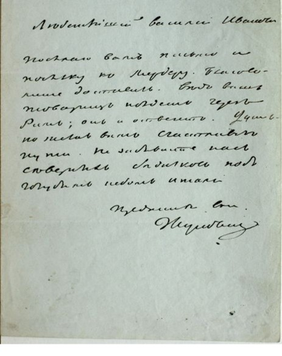
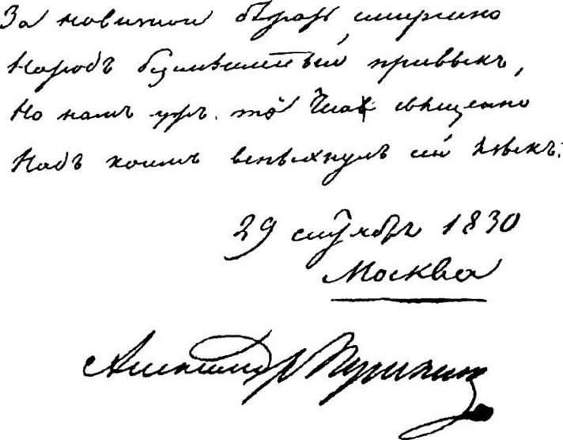
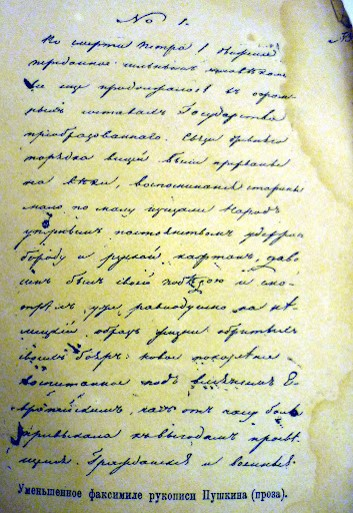
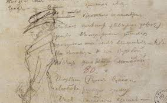
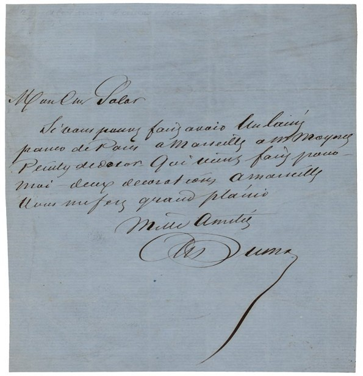
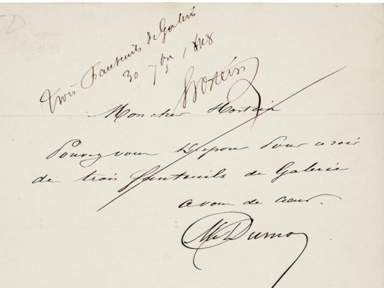
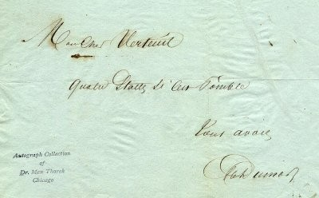
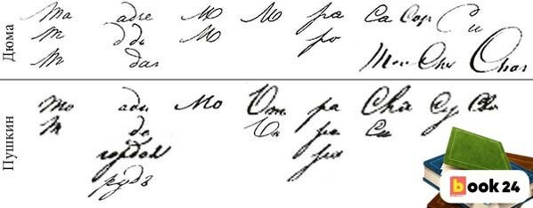
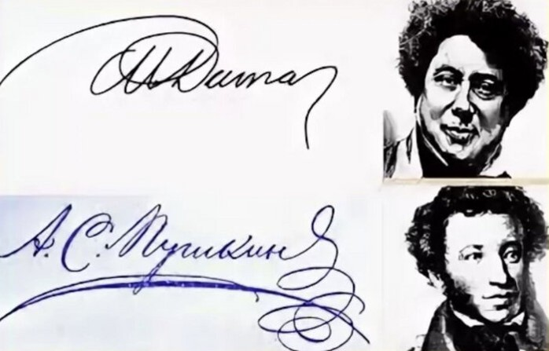
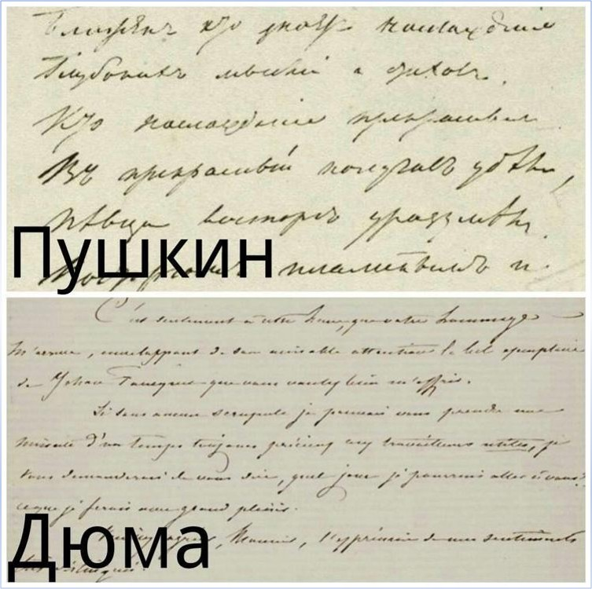

Французский язык — это романский язык, который относится к группе индоевропейских языков. Он является официальным языком во Франции и в ряде других стран, включая Бельгию, Швейцарию, Канаду и многие африканские государства. Французский известен своей мелодичностью и богатой литературной традицией, а также играет важную роль в международной дипломатии и культуре. Язык имеет сложную грамматику, с множеством правил по спряжению глаголов и согласованию существительных, что делает его изучение интересным, но иногда затруднительным. В данной презентации мы ознакомимся со знаковыми системами французского языка, разберем отдельные слова на французском, а также проанализируем и сравним почерки великих русских писателей - Александра Дюма и Александра Пушкина.
Amour (амур) - любовь [a.muʁ]
Liberté (либертé) – свобода [li.bɛʁ.te]
soleil (солей) – солнце [sɔ.lɛj]
Bonjour (бонжур) – добрый день [bɔ̃.ʒuʁ]
École (эколь) - школа [e.kɔl]
Почерк, как форма самовыражения, отражает индивидуальность автора, его настроение и стиль мышления. В этом контексте особенно интересно рассмотреть почерки двух выдающихся французских литераторов XIX века: Александра Пушкина и Александра Дюма. Они оба оставили неизгладимый след в мировой литературе, но их подход к письму и самовыражению заметно различается. Погрузимся в детали их почерков, чтобы понять, как они отражают характеры и творческие стили этих гениев.
Почерк А. Пушкина
   Стиль: Почерк Пушкина часто описывается как изящный и аккуратный, с некоторой игривостью. Его буквы имеют плавные линии и часто соединены между собой.
Форма букв: У Пушкина можно заметить округлые формы букв, что придаёт его почерку мягкость. Он использовал как печатные, так и рукописные элементы.
Размер: Размер почерка варьируется, но в целом он не слишком крупный и не слишком мелкий, что делает его удобочитаемым.
Примеры: Сохранившиеся письма и черновики Пушкина демонстрируют его характерный стиль. Например, в его письмах часто можно увидеть плавные линии и аккуратное оформление.
Почерк А. Дюма
  Стиль: Почерк Дюма более энергичный и динамичный. Он также аккуратен, но может выглядеть менее изящно по сравнению с Пушкиным.
Форма букв: Буквы Дюма часто имеют более резкие углы и могут быть более прямыми, что придаёт его почерку определённую строгость.
Размер: Почерк Дюма обычно крупнее, что делает его заметным и легко читаемым.
Примеры: В сохранившихся письмах Дюма можно увидеть его характерный стиль, который отличается от стиля Пушкина своей энергией и выразительностью.
  Таким образом, при сравнении почерков можно заметить, что они отражают индивидуальности обоих авторов. Почерк Пушкина более изящен и плавен, в то время как почерк Дюма более энергичен и прямолинеен. Если провести анализ конкретных примеров, можно сделать вывод о том, что почерки действительно принадлежат двум разным людям, так как они отражают разные стили и характеры авторов.
Французский язык занимает важное место в международной коммуникации, являясь одним из официальных языков ООН и многих других международных организаций. Он также является языком искусства, моды и гастрономии, что делает его незаменимым для тех, кто интересуется культурой и историей. Кроме того, знание французского языка открывает возможности для учебы и работы в различных странах, где он широко используется.